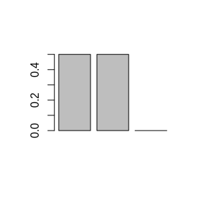
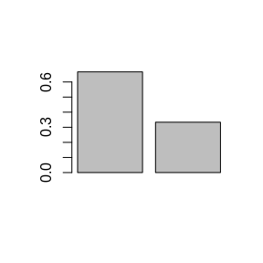
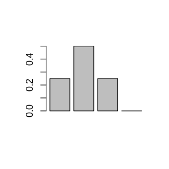
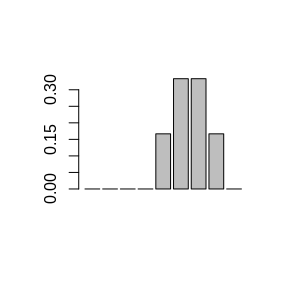
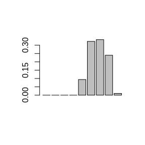

The dynatop function in the dynamic TOPMODEL R package implements a set of numerical solutions to the
governing equations of the dynamic TOPMODEL hillslope formulation. This
returns the inflow to the channel reachs specified in the model.
This vignette documents the formulation and the numerical solution used to
route these channel inflows, along with other diffuse and point inputs to the
model.
Table @ref(tab:ch-notation} outlines the notation used in this document.
| Quantity type | Symbol | Description | unit |
|---|---|---|---|
| Dischage from a reach at time \(t\) | \(q\left(t\right)\) | Instananeous discharge | m\(^3\)/s |
| Dischage from a reach at time \(t\) | \(g\left(t\right)\) | Instananeous discharge | m\(^3\)/s |
| Diffuse inflow | \(d\left(t\right)\) | Instantaneous inflow from diffuse inputs to the channel HRU | m\(^3\)/s |
| Point inflow | \(p\left(t\right)\) | Instantaneous inflow from a point source to the head of the Channel HRU | m\(^3\)/s |
| Velocity | \(v_{ch}\) | Effective velocity of water convience within the Channel HRUnetwork | m/s |
A Channel HRU is considered as representing a channel reach of length
\(L\). Each Channel HRU has two types of inflow, labelled diffuse
and point. Diffuse inflows are external inputs which occur at a
constant rate over the length of the reach. These include precipitation, the
inflow from Hillslope HRUs and time series specified in the diffuse_inputs
table.
Point inflows are considered to occur at the head of the channel reach. These
consist of the inflow from upstream channel HRUs and time series specified in the point_inputs table.
The time delay channel routing is selected by setting the channel_solver
value in the model options vector to histogram. The method offers a basic representation of the movement of
water in which a constant velocity to assigned to each channel reach.
For the diffuse inputs to a single channel reach of length \(L\) the contribution to the outflow at time \(t\) is given by \[ \frac{1}{L} \int\limits_{l=0}^{L} d\left(t - \frac{l}{v_{ch}}\right) dl \] where as for a point input to the same channel the contribution is \[ p\left(t - \frac{L}{v_{ch}}\right) \] such that \[ q\left(t\right) = \frac{1}{L} \int\limits_{l=0}^{L} d\left(t - \frac{l}{v_{ch}}\right) dl + p\left(t - \frac{L}{v_{ch}}\right) \]
Consider next a change of variables by taking \(\tau = l/v_{ch}\) and defining \(\tau_{L} = L/v_{ch}\) so that \[ q\left(t\right) = \frac{v_{ch}}{L} \int\limits_{\tau=0}^{\tau_{L}} d\left(t - \tau\right) d\tau + p\left(t - \tau_{L}\right) \]
Since the action on the point inputs is purely advective the flow at a gauged location can be written as the summation of the diffuse and external point inflows to the Channel HRUs (reachs) above the location. For the \(k\)th Channel HRU above the gauge let \(\tau_{0}^{\left[k\right]}\) be the advective time delay between water leaving the reach and arriving at the gauge. This is readily computed from the channel HRU connectivity, reach lengths and velocities. The gauged flow can thus be expressed as
\[ g\left(t\right) = \sum_{k} \frac{v_{ch}^{\left[k\right]}}{L^{\left[k\right]}} \int\limits_{\tau_{0}^{\left[k\right]}}^{\tau_{0}^{\left[k\right]} + \tau_{L}^{\left[k\right]}} d\left(t - \tau \right) d\tau + \hat{p}\left(t - \tau_{0}^{\left[k\right]} - \tau_{L}^{\left[k\right]}\right) \]
To solve for the gauge flow on a discrete time step \(\Delta t\) suppose that \(t = i\Delta t\) and that the flow index by the time subscript is valid over the preceeding time step; for example \[ d\left(t\right) = d_{i\Delta t} \quad \left(i-1\right)\Delta t \leq t <i\Delta t \]
Then to evaluate \(g_{i\Delta t}\) while maintaing mass conservation in the formulation, the gauged flows must be integrated over the time period. Consider one of the contributing HRUs, then (dropping the superscript \(k\)) the contribution of the point inflow is \[ \frac{1}{\Delta t}\int\limits_{\left(i-1\right)\Delta t}^{i\Delta t} \hat{p}\left(t - \tau_{0} - \tau_{L}\right) dt = \frac{\left(r_{L}+1\right)\Delta t - \left(\tau_{0}+\tau_{L}\right)}{\Delta t} \hat{p}_{\left(i-r_L\right)\Delta t} + \frac{\tau_0 + \tau_L- r_L \Delta t}{\Delta t} \hat{p}_{\left(i-1-r_L\right)\Delta t} \] where \(r_L\) is the largest integer for which \(r_{L}\Delta t \leq \tau_0 + \tau_L\). The right hand side of this expression gives the time delay histogram for the point inflow.
As similar expression holds for each value of \(\tau\) along the HRU, such that the average inflow at that point over the time step is given by \[ \frac{1}{\Delta t}\int\limits_{\left(i-1\right)\Delta t}^{i\Delta t} d\left(t - \tau\right) dt = \frac{\left(r_{\tau}+1\right)\Delta t - \tau}{\Delta t} d_{\left(i-r_{\tau}\right)\Delta t} + \frac{\tau- r_{\tau} \Delta t}{\Delta t} d_{\left(i-1-r_{\tau}\right)\Delta t} \] where \(r_\tau\) is the largest integer for which \(r_{\tau}\Delta t \leq \tau\). Next consider the integral of the difuse inflows over \(\tau\); that is \[ \int\limits_{\tau_{0}}^{\tau_{0} + \tau_{L}} \frac{\left(r_{\tau}+1\right)\Delta t - \tau}{\Delta t} d_{\left(i-r_{\tau}\right)\Delta t} + \frac{\tau- r_{\tau} \Delta t}{\Delta t} d_{\left(i-1-r_{\tau}\right)\Delta t} d\tau \]
The range of \(\tau\) can be divided into intervals which share the same value of \(r_{\tau}\). Defining the minimum value of \(r_\tau\) as \(r_{0} = r_{\tau_{0}}\) then if \(r_{L}>r_{0}\) the intervals are given by \[ \left(\tau_0,\left(r_{0}+1\right)\Delta t\right), \left(\left(r_{0}+1\right)\Delta t,\left(r_{0}+2\right)\Delta t\right), \ldots, \left(\left(r_{0}+n\right)\Delta t,\tau_{0}+\tau_{L}\right) \]
For \(j=1,\ldots,n-1\) the integral over an interval of \(\Delta t\) gives \[ \int\limits_{\left(r_{0}+j\right)\Delta t}^{\left(r_{0}+j+1\right)\Delta t} \frac{\left(r_{0}+j+1\right)\Delta t - \tau}{\Delta t} d_{\left(i-r_{0}-j\right)\Delta t} + \frac{\tau- \left(r_{0}+j\right) \Delta t}{\Delta t} d_{\left(i-r_{0}-j-1\right)\Delta t} d\tau \\ = \frac{\Delta t}{2} \left(\left(r_{0}+j+1\right)-\left(r_{0}+j\right)\right)^2 d_{\left(i-r-j\right)\Delta t} + \frac{\Delta t}{2} \left(\left(r_{0}+j+1\right)-\left(r_{0}+j\right)\right)^2 d_{\left(i-r-j-1\right)\Delta t} \\ = \frac{\Delta t}{2} d_{\left(i-r_{0}-j\right)\Delta t} + \frac{\Delta t}{2} d_{\left(i-r_{0}-j-1\right)\Delta t} \]
For the initial interval \[ \int\limits_{\tau_{0}}^{\left(r_{0}+1\right)\Delta t} \frac{\left(r_{0}+1\right)\Delta t - \tau}{\Delta t} d_{\left(i-r_{0}\right)\Delta t} + \frac{\tau- r_{0}\Delta t}{\Delta t} d_{\left(i-r_{0}-1\right)\Delta t} d\tau \\ = \frac{1}{2\Delta t} \left(\left(r_0+1\right)\Delta t - \tau_{0}\right)^2 d_{\left(i-r_{0}\right)\Delta t} + \left\{ \frac{1}{2\Delta t} \left(\left(r_0+1\right)\Delta t - \tau_{0}\right)^2 + \frac{ \left(\tau_{0} - r_{0}\Delta t\right)\left(\left(r_0+1\right)\Delta t - \tau_{0}\right)}{\Delta t} \right\} d_{\left(i-r_{0}-1\right)\Delta t} \]
and the final interval and noting that \(r_{0}+n = r_{L}\) \[ \int\limits_{r_{L}\Delta t}^{\tau_0+\tau_L} \frac{\left(r_{L}+1\right)\Delta t - \tau}{\Delta t} d_{\left(i-r_{L}\right)\Delta t} + \frac{\tau- r_{L} \Delta t}{\Delta t} d_{\left(i-r_{L}-1\right)\Delta t} d\tau \\ = \left\{ \frac{1}{2\Delta t} \left(\tau_0 + \tau_{L} - r_L\Delta t\right)^2 + \frac{ \left(\tau_0 + \tau_{L} - r_L\Delta t\right)\left(\left(r_L + 1 \right)\Delta t - \tau_{0} - \tau_L\right)}{\Delta t} \right\}d_{\left(i-r_{L}\right)\Delta t} + \frac{1}{2\Delta t} \left(\tau_0 + \tau_{L} - r_L\Delta t\right)^2 d_{\left(i-r_{L}-1\right)\Delta t} \]
By grouping the terms for the individual inputs together and multiply through by \(v_{ch}/L\) time delay histograms can be constructed for each HRU draining to the gauge. Table 2 shows the solution for \(r_{L}>r_0+1\) and Table 3 for the case \(r_{L}=r_0+1\).
| Delay | Inflow | Weight |
|---|---|---|
| \(r=0,\ldots,r_0-1\) | \(d_{\left(i-r\right)\Delta t}\) | 0 |
| \(r_0\) | \(d_{\left(i-r_0\right)\Delta t}\) | \(\frac{v_{ch}}{2L\Delta t} \left(\left(r_0+1\right)\Delta t - \tau_{0}\right)^2\) |
| \(r_0+1\) | \(d_{\left(i-r_0-1\right)\Delta t}\) | \(\frac{v_{ch}\Delta t}{2L} + \frac{v_{ch}}{2L\Delta t} \left(\left(r_0+1\right)\Delta t - \tau_{0}\right)^2 + \frac{ v_{ch}\left(\tau_{0} - r_{0}\Delta t\right)\left(\left(r_0+1\right)\Delta t - \tau_{0}\right)}{L\Delta t}\) |
| \(r=r_{0}+2,\ldots,r_{L}-1\) | \(d_{\left(i-r\right)\Delta t}\) | \(\frac{v_{ch}\Delta t}{L}\) |
| \(r_{L}\) | \(d_{\left(i-r_{L}\right)\Delta t}\) | \(\frac{v_{ch}\Delta t}{2L} + \frac{v_{ch}}{2L\Delta t} \left(\tau_0 + \tau_{L} - r_L\Delta t\right)^2 + \frac{ v_{ch}\left(\tau_0 + \tau_{L} - r_L\Delta t\right)\left(\left(r_L + 1 \right)\Delta t - \tau_{0} - \tau_L\right)}{L\Delta t}\) |
| \(r_{L}+1\) | \(d_{\left(i-r_{L}-1\right)\Delta t}\) | \(\frac{v_{ch}}{2L\Delta t} \left(\tau_0 + \tau_{L} - r_L\Delta t\right)^2\) |
| Delay | Inflow | Weight |
|---|---|---|
| \(r=0,\ldots,r_0-1\) | \(d_{\left(i-r\right)\Delta t}\) | 0 |
| \(r_0\) | \(d_{\left(i-r_0\right)\Delta t}\) | \(\frac{v_{ch}}{2L\Delta t} \left(\left(r_0+1\right)\Delta t - \tau_{0}\right)^2\) |
| \(r_0+1 = r_{L}\) | \(d_{\left(i-r_0-1\right)\Delta t}\) | \[\frac{v_{ch}}{2L\Delta t}\left(\left(r_0+1\right)\Delta t - \tau_{0}\right)^2 + \frac{v_{ch}\left(\tau_{0} - r_{0}\Delta t\right)\left(\left(r_0+1\right)\Delta t- \tau_{0}\right)}{L\Delta t} +\\ \frac{v_{ch}}{L\Delta t}\left(\tau_0 + \tau_{L} - r_L\Delta t\right)^2 + \frac{ v_{ch}\left(\tau_0 + \tau_{L} - r_L\Delta t\right)\left(\left(r_L + 1 \right)\Delta t - \tau_{0} - \tau_L\right)}{L\Delta t}\] |
| \(r_{L}+1\) | \(d_{\left(i-r_{L}-1\right)\Delta t}\) | \(\frac{v_{ch}}{2L\Delta t} \left(\tau_0 + \tau_{L} - r_L\Delta t\right)^2\) |
The final case to consider is \(r_{0} = r_{L}\). In this case there is a single integral to evaluate: \[ \int\limits_{\tau_{0}}^{\tau_{0}+\tau_{L}} \frac{\left(r_{0}+1\right)\Delta t - \tau}{\Delta t} d_{\left(i-r_{0}\right)\Delta t} + \frac{\tau- r_{0} \Delta t}{\Delta t} d_{\left(i-r_{0}-1\right)\Delta t} d\tau \\ = \frac{\tau_{L}}{\Delta t} \left(\left(r_{0}+1\right)\Delta t - \tau_{0} - \tau_{L}/2 \right) d_{\left(i-r_{0}\right)\Delta t} + \frac{\tau_{L}}{\Delta t} \left(\tau_{)} + \tau_{L}/2 - r_{0}\Delta t\right) d_{\left(i-r_{0}-1\right)\Delta t} \]
In this section some example histograms are generated based upon the length, velocity and \(\tau_0\) of the Channel HRU alond with the time step \(\Delta t\).
First a function for defining the histrogram for a point inflow can be coded as follows:
## L is length of channel
## vch is channel velocity
## Dt is the time step
## tau0 is the time delay between the gauge and foot of the reach
fp <- function(L,vch,Dt,tau0){
tauL <- L/vch
rL <- floor((tau0+tauL)/Dt)
irL <- rL+1 ## index in vector since R starts at 1 not zero
b <- rep(0,irL+1)
b[irL] <- ((rL+1)*Dt - tau0-tauL)/Dt
b[irL+1] <- (tau0+tauL - rL*Dt)/Dt
return(b)
}For the first example all the input should occur with one time step delay (second element in output vector) since \(L/v_ch\) exactly matches the time step and \(\tau_{0}=0\)
fp(L=100,vch=0.5,Dt=200,tau0=0)
#> [1] 0 1 0In this example \(\tau_{0}+L/v_ch = \frac{7}{2}\Delta t\); so the first non zero value of the vector should be the 4th element with the 4th and 5th elements being equal.
fp(L=100,vch=1,Dt=200,tau0=600)
#> [1] 0.0 0.0 0.0 0.5 0.5This build upon the above example, altering the velocity such that the only non-zero elements are the 4th and 5th, but with the 4th being larger then the 5th.
fp(L=100,vch=1.5,Dt=200,tau0=600)
#> [1] 0.0000000 0.0000000 0.0000000 0.6666667 0.3333333The function for the difuse inflow is more complex since the special cases have to be handled:
fd <- function(L,vch,Dt,tau0){
tauL <- L/vch
r0 <- floor(tau0/Dt)
ir0 <- r0+1 ## index in vector since R starts at 1 not zero
rL <- floor((tau0+tauL)/Dt)
irL <- rL+1 ## index in vector since R starts at 1 not zero
b <- rep(0,irL+1)
if(rL>r0){
b[ir0:(irL-1)] <- Dt # inital values valid unless over written
b[ir0] <- ( ((r0+1)*Dt - tau0)^2 ) / (2*Dt)
b[ir0+1] <- b[ir0] + ( ((r0+1)*Dt - tau0)*(tau0 - (r0*Dt)) ) / Dt
b[irL+1] <- ( (tau0+tauL - (rL*Dt))^2 ) / (2*Dt)
b[irL] <- b[irL] + b[irL+1] + ( ((tau0+tauL - (rL*Dt))*((rL+1)*Dt - tau0-tauL)) / Dt ) ## added to self since rL could equal r0+1
if( rL > (r0+1) ){
b[ir0+1] <- b[ir0+1] + Dt/2
b[irL] <- b[irL] + Dt/2
}
}else{
b[ir0] <- (tauL/Dt)*( (r0+1)*Dt - tau0 - (tauL/2) )
b[ir0+1] <- (tauL/Dt)*(tau0 + (tauL/2) - r0*Dt )
}
return(b*vch/L)
}In the first example there is no advective time delay and \(L/v_{ch} = \Delta t\). This results in time delay historgram in which the first two values equal 0.5. This is an example of the case \(r_{L}=r_{0}+1\)

Extending the previous example the velocity now altered to that \(r_{L}=r_{0}\). The resulting non-negative histogram values are now the first two in the vector.

In contrast decreasing the channel velocity produces a more delayed histogram. In this case \(r_{L}>r_{0}+1\).

Finally we look at two cases where \(\tau_0\) is posisitve; being either a direct multiple of the time step

or not
